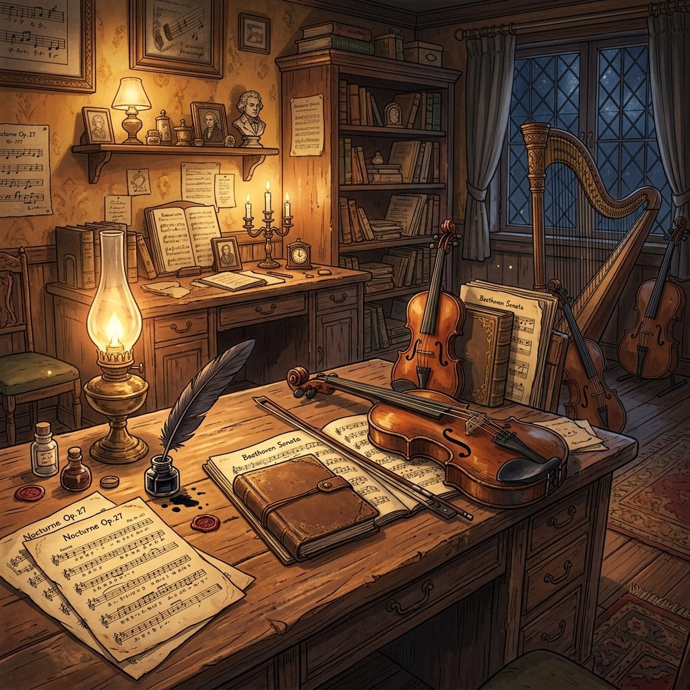
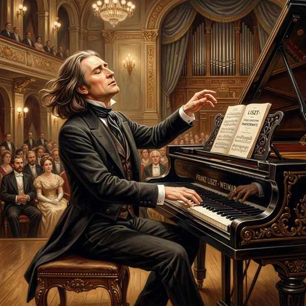
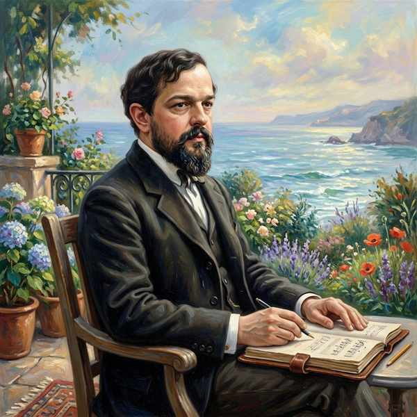

音楽の知識⑤ (日本の伝統音楽史＆西洋音楽史)
日本の宮廷音楽から近世芸能の歴史、そして中世から近現代にわたる西洋音楽の歴史的変遷と、テスト頻出の大作曲家たちの代表曲を整理します。それぞれの時代区分や様式の特徴を視覚的に結びつけて記憶しましょう！
1. 日本の伝統音楽の歴史
平安時代から江戸時代にかけて花開いた、日本の代表的な芸能・音楽の歴史です。


- 雅楽（ががく）：5〜9世紀頃にアジア各地から伝来した音楽や舞が融合し、平安時代に貴族の間で整えられました。
- 能（のう）：室町時代に観阿弥（かんあみ）・世阿弥（ぜあみ）親子が基本的な形を整え、室町幕府3代将軍の足利義満が支援しました。
- 歌舞伎（かぶき）：江戸時代初期に出雲のお国（いずめのおくに）が興行した「かぶき踊」が流行し、音楽・舞踊・演劇が融合した総合芸術に発展しました。
- 箏曲（そうきょく）：江戸時代初期に八橋検校（やつはしけんぎょう）が平調子などを創始して近代箏曲の基礎を築きました。
- 竹本座（たけもとざ）：江戸時代初期に大坂で人形浄瑠璃（文楽）の語りである義太夫節を上演するために、竹本義太夫が創設した劇場・一座。
2. 西洋音楽の歴史と代表的な作曲家

中世からバロック、古典派、ロマン派、印象派、そして近現代への西洋音楽の流れ。
- グレゴリオ聖歌 ➔ カトリック教会の典礼で歌われる、伴奏のない単旋律（たんせんりつ）の音楽。
- 多声音楽（たせいおんがく） ➔ 中世からルネサンスにかけて発達した、対位法（たいいほう）（異なる旋律を重ねる技法）を用いた複雑な音楽。
劇的で装飾豊かな音楽の時代。イタリアのフィレンツェで「オペラ（歌劇）」が誕生しました。

均整の取れた形式美を重んじる時代。ソナタ形式が確立され、交響曲が大きく発展しました。

- ベートーヴェンの3大ピアノソナタ ➔ 『悲愴（ひそう）』『熱情（ねつじょう）』ともう1曲は『月光（げっこう）』です。
形式にとらわれず、個人の感情や内面、物語（標題音楽）を自由に表現した時代。



- 標題音楽（ひょうだいおんがく） ➔ スメタナの交響詩「ブルタバ」のように、音楽以外の文学的・絵画的な物語や情景を表現した器楽曲。
新しい響きを求めて、光や影の揺らめきを描写する「印象派」などが現れました。


🔥 定期テスト対策・暗記のコツ
① 日本の芸能の大成・成立時代の区別
「雅楽 ➔ 平安時代（宮廷貴族）」
「能 ➔ 室町時代（世阿弥・足利義満）」
「歌舞伎・箏・文楽 ➔ 江戸時代」です。
特に能の「世阿弥」と支援者「足利義満」の組み合わせは日本史（社会科）のテストでも頻出です。
② 西洋音楽史の「流れ」の順序（並び替え問題必出！）
西洋音楽の時代順序は『中世・ルネサンス ➔ バロック ➔ 古典派 ➔ ロマン派 ➔ 近代・現代（印象派）』です。それぞれの代表的な作曲家（ヴィヴァルディ＝バロック、ハイドン＝古典、リスト＝ロマン、ラヴェル＝近代）と時代をセットで覚えましょう。
③ グレゴリオ聖歌の「単旋律・無伴奏」
グレゴリオ聖歌は「ハモらない（単一の旋律を全員で歌う＝単旋律）」かつ「楽器を使わない（歌声のみ＝無伴奏）」のが特徴です。多声音楽（ハモる、対位法）との違いとして非常によく出題されます。